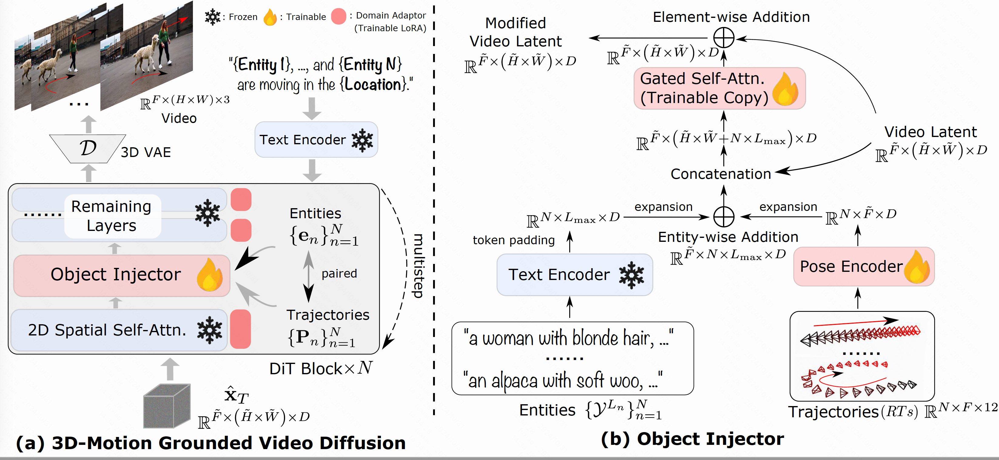

Given a text prompt consisting of N entities, 3DTrajMaster (a) is
able to generate the desired video with entity motions that conform to the input entity-wise
pose sequences.
Specifically, it involves two training phases.
First, it utilizes a domain adaptor to mitigate the negative impact of training videos.
Then, an object injector module is inserted after the 2D spatial self-attention layer to
integrate paired entity prompts and 3D trajectories.
(b) Details of the object injection process.
The entities are projected into latent embeddings through the text encoder. The paired pose
sequences are projected using a learnable pose encoder and then fused with entity embeddings
to form entity-trajectory correspondences.
This condition embedding is concatenated with the video latent and fed into a gated
self-attention layer for motion fusion.
Finally, the modified latent gets back to the remaining layers in the DiT block.